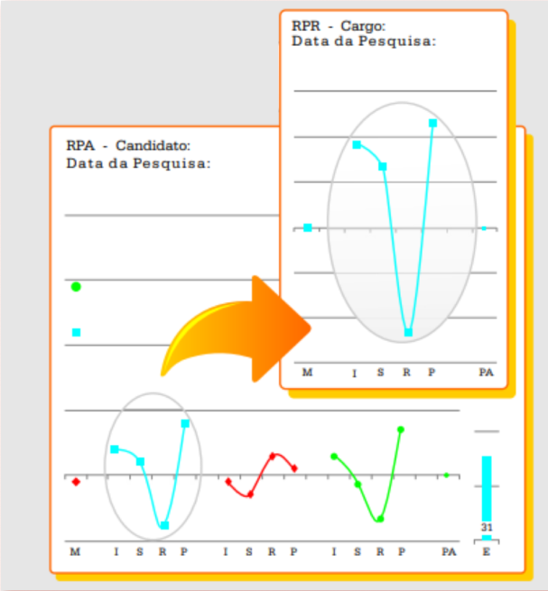
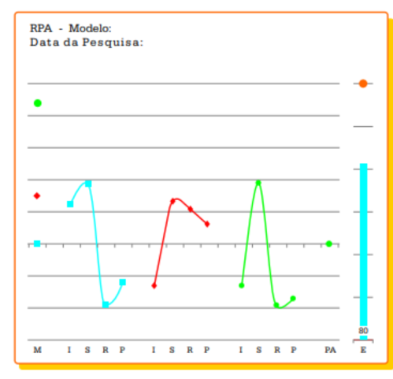
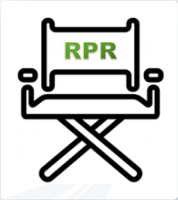

RECRUTAMENTO INTELIGENTE
INDEKS
SIMPLIFIQUE SUAS
CONTRATAÇÕES
CONTRATAÇÕES
E TOME DECISÕES MAIS ASSERTIVAS NA HORA DE
MONTAR SUA EQUIPE.
MONTAR SUA EQUIPE.
Descubra a solução de potencialização de
talentos e forme uma equipe imbatível!
Preencher uma vaga nunca foi tão fácil, intuitivo e assertivo. Com
a INDEKS, você terá uma ferramenta ideal para definir o perfil mais
assertivo para cada posição disponível, garantindo que você encontre
os candidatos perfeitos para a sua empresa.
a INDEKS, você terá uma ferramenta ideal para definir o perfil mais
assertivo para cada posição disponível, garantindo que você encontre
os candidatos perfeitos para a sua empresa.
Com uma interface descomplicada, você poderá gerenciar cada etapa
do processo de contratação de forma simples e eficiente. Nada de
perder tempo e dinheiro com tarefas burocráticas e complexas.
do processo de contratação de forma simples e eficiente. Nada de
perder tempo e dinheiro com tarefas burocráticas e complexas.
.
ESSA É A SUA CHANCE DE
Pessoa certa, para o papel certo, com segurança e rapidez.
Os benefícios do Recrutamento Inteligente INDEKS
vão desde a otimização do processo de contratação
a redução do turnover. Você contratará com
agilidade, reduzindo o tempo gasto na busca e
seleção de candidatos e aumentará a precisão na
escolha do contratado, evitando contratações
equivocadas que podem custar caro no futuro.
vão desde a otimização do processo de contratação
a redução do turnover. Você contratará com
agilidade, reduzindo o tempo gasto na busca e
seleção de candidatos e aumentará a precisão na
escolha do contratado, evitando contratações
equivocadas que podem custar caro no futuro.

Redução do Custo de
Contratação
O custo financeiro de um processo
de contratação no Brasil, pode
chegar a 10 mil reais por vaga.
Aumente a produtividade dos seus
colaboradores, sendo mais
assertivo nas contratações e
inovando a forma como o RH lida
com o processo de contratação.
de contratação no Brasil, pode
chegar a 10 mil reais por vaga.
Aumente a produtividade dos seus
colaboradores, sendo mais
assertivo nas contratações e
inovando a forma como o RH lida
com o processo de contratação.
Engajamento Imediato
Com a INDEKS é possível
determinar o perfil
comportamental exato,
conforme a necessidade da
empresa, relacionada ao
momento da equipe e
exigências do cargo.
determinar o perfil
comportamental exato,
conforme a necessidade da
empresa, relacionada ao
momento da equipe e
exigências do cargo.
Prevenção de Turnover
Se contratar é caro, demitir é
bem mais caro e os custos
disso não são apenas
financeiros, porque o processo
de contratação vai reiniciar e
impactar a produção com a
baixa na equipe.
bem mais caro e os custos
disso não são apenas
financeiros, porque o processo
de contratação vai reiniciar e
impactar a produção com a
baixa na equipe.
Contratação Rápida e
Assertiva
Empresas levam em média 42
dias para preencher uma vaga,
com nossa pré-seleção
automatizada, é possível
reduzir os dias e o RH não
perde tempo entrevistando
candidatos desqualificados.
dias para preencher uma vaga,
com nossa pré-seleção
automatizada, é possível
reduzir os dias e o RH não
perde tempo entrevistando
candidatos desqualificados.

Inteligência Artificial
Precisa.
Com a ordenação dos candidatos feita pelo RPA
da INDEKS, você vai encontrar rapidamente os
candidatos de maior afinidade com as vagas de
acordo com os seus critérios de seleção.
da INDEKS, você vai encontrar rapidamente os
candidatos de maior afinidade com as vagas de
acordo com os seus critérios de seleção.
Cargo ou Função
Defina a vaga de acordo com
as exigências do cargo a ser
preenchido e a necessidade
específica do momento em que
a empresa está.
as exigências do cargo a ser
preenchido e a necessidade
específica do momento em que
a empresa está.
Vaga Disponível
Defina o perfil comportamental
que mais se adequa a
necessidade da empresa e do
cargo e faça uma seleção
rápida, automatizada e com
inteligência artificial.
que mais se adequa a
necessidade da empresa e do
cargo e faça uma seleção
rápida, automatizada e com
inteligência artificial.
Seleção do Candidato
Descubra em tempo recorde
quais são os perfis de
candidatos que melhor se
enquadram à necessidade do
cargo e da empresa,
considerando experiência e
comportamento.
quais são os perfis de
candidatos que melhor se
enquadram à necessidade do
cargo e da empresa,
considerando experiência e
comportamento.
Equipe Engajada
Quando a pessoa certa está no
cargo certo, as equipes
engajam mais rápido, o
processo de adaptação é curto
e suave, fazendo a empresa
acelerar a sua curva de
crescimento.
cargo certo, as equipes
engajam mais rápido, o
processo de adaptação é curto
e suave, fazendo a empresa
acelerar a sua curva de
crescimento.
PERFIL IDEAL PARA O CARGO CERTO
Contrata-se por experiência,
demite-se por comportamento
No contexto da gestão organizacional, as empresas
estabelecem estruturas formais e atribuem cargos
hierárquicos aos funcionários. A eficácia da
contratação depende da aceitação dos funcionários
em relação às normas e papéis organizacionais, um
processo que pode se estender por meses. Isso
reforça a ideia de que as contratações são
baseadas em experiência, enquanto demissões
resultam de comportamentos inadequados. A
abordagem de conhecer o perfil comportamental
necessário para um cargo através do RPR e
selecionar profissionais com perfis
comportamentais adequados usando o RPA visa
aumentar a precisão na escolha de profissionais,
buscando uma contratação baseada em experiência
e comportamento.

estabelecem estruturas formais e atribuem cargos
hierárquicos aos funcionários. A eficácia da
contratação depende da aceitação dos funcionários
em relação às normas e papéis organizacionais, um
processo que pode se estender por meses. Isso
reforça a ideia de que as contratações são
baseadas em experiência, enquanto demissões
resultam de comportamentos inadequados. A
abordagem de conhecer o perfil comportamental
necessário para um cargo através do RPR e
selecionar profissionais com perfis
comportamentais adequados usando o RPA visa
aumentar a precisão na escolha de profissionais,
buscando uma contratação baseada em experiência
e comportamento.
Banco de Dados Poderoso
Uma das formas de mitigar os custos com o processo de contratação é ter
um banco de dados com candidatos pré-selecionados, além de poder fazer mudanças de cargo e
função, através da avaliação do perfil
dos colaboradores, obtendo assim maior assertividade na decisão de abrir
ou não, vaga para contratação.
um banco de dados com candidatos pré-selecionados, além de poder fazer mudanças de cargo e
função, através da avaliação do perfil
dos colaboradores, obtendo assim maior assertividade na decisão de abrir
ou não, vaga para contratação.
Chamada interna, para vaga
aberta ou expansão.
aberta ou expansão.
Pré-seleção rápida e segura
com o banco de dados de
candidatos contratados.
com o banco de dados de
candidatos contratados.

Reorganização de equipes e
troca de função rápida, com nível
de estresse praticamente zero.
troca de função rápida, com nível
de estresse praticamente zero.
Obtenha agora a sua conta teste gratuita, para ter acesso a uma avaliação completa da sua equipe e 30 dias para avaliar novos candidatos.
Alto desempenho nos potenciais
individuais e coletivos
Não adiantar ter o melhor técnico com o pior temperamento. Além da
competência técnica, as empresas precisam de pessoas com o temperamento adequado, para
cada cargo e função. Essas pessoas precisam ser flexíveis e saber conviver com diferenças.
competência técnica, as empresas precisam de pessoas com o temperamento adequado, para
cada cargo e função. Essas pessoas precisam ser flexíveis e saber conviver com diferenças.
É por isso que o RPA analisa graficamente:
Perfil comportamental
Percepção do ambiente atual
Padrão comportamental atual
Fontes de estresse
Nível de energia

Mas... o que são RPA e RPR?
O
RPA
é uma ferramenta de análise de perfil
comportamental que tem como base um
método estatístico e linguístico de pesquisa. Por
comportamental que tem como base um
método estatístico e linguístico de pesquisa. Por
meio do
RPA
é possível mapear características
como estilo de decisão, a capacidade de se
relacionar com outras pessoas, o ritmo de
trabalho e a aptidão para lidar com detalhes em
seu ambiente profissional.

como estilo de decisão, a capacidade de se
relacionar com outras pessoas, o ritmo de
trabalho e a aptidão para lidar com detalhes em
seu ambiente profissional.

O
RPR
é um desdobramento do método
RPA
que permite descrever o padrão
comportamental desejado para o cargo,
inclusive de forma gráfica. Essa ferramenta
vai determinar qual o perfil mais adequado
para o cargo a ser ocupado.
comportamental desejado para o cargo,
inclusive de forma gráfica. Essa ferramenta
vai determinar qual o perfil mais adequado
para o cargo a ser ocupado.
Não basta só a ATS, também precisa do
Perfil Comportamental!
Integrar um Sistema de Rastreamento de Candidatos com Análise
Comportamental é a chave
para revolucionar a contratação e gestão de equipes. Ao agilizar a
triagem de candidatos e
Comportamental é a chave
para revolucionar a contratação e gestão de equipes. Ao agilizar a
triagem de candidatos e
oferecer insights comportamentais, a
Indeks
fornece equipes mais engajadas com a cultura da
empresa e líderes capacitados para tomar decisões assertivas.
empresa e líderes capacitados para tomar decisões assertivas.
Obtenha agora a sua conta teste gratuita, para ter acesso a uma avaliação completa da sua equipe e 30 dias para avaliar novos candidatos.

Entre em Contato Conosco
Copyright © 2023/2024 - Vitor Ribas
E-mail: contato@indeksrpa.com.br